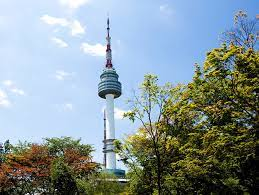
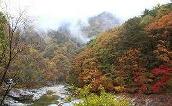
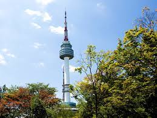
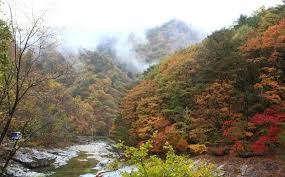

Seoul, Korea
 


Seoul, the capital of South Korea, is a huge metropolis where modern skyscrapers, high-tech subways and pop culture meet Buddhist temples, palaces and street markets. Notable attractions include futuristic Dongdaemun Design Plaza, a convention hall with curving architecture and a rooftop park; Gyeongbokgung Palace, which once had more than 7,000 rooms; and Jogyesa Temple, site of ancient locust and pine trees.